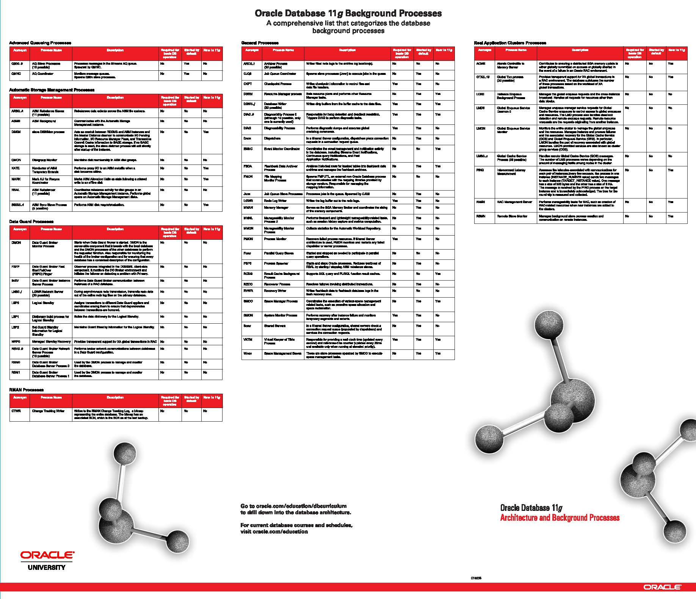
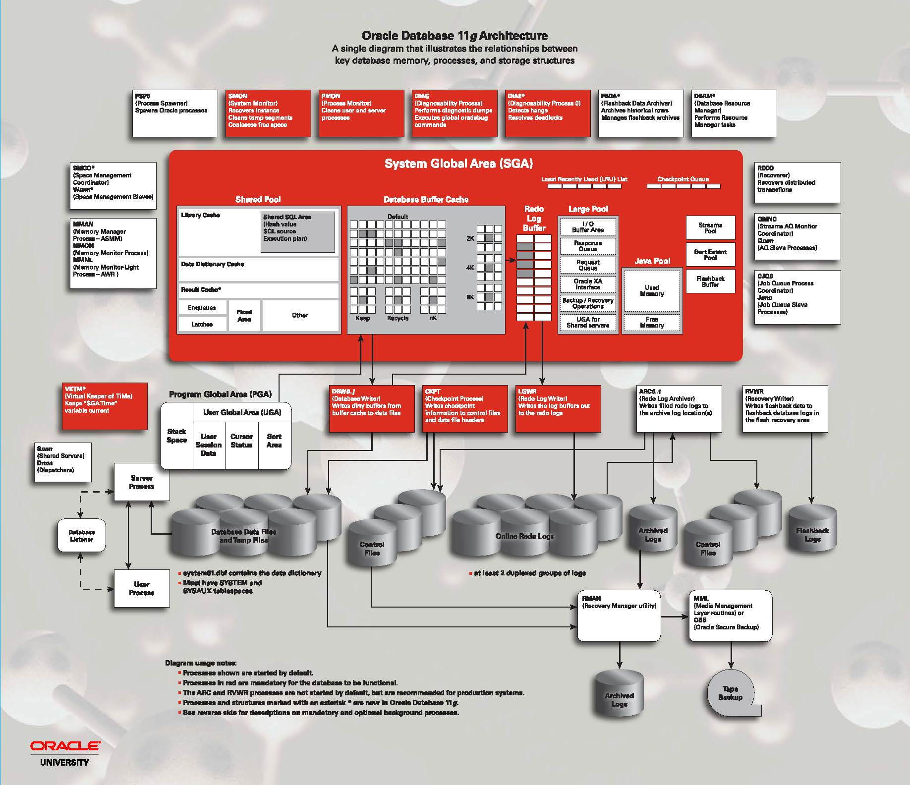

今天是祖国母亲的70岁生日，祖国万岁！ |
内容概览
数据库实例
Oracle数据库服务器由一个Oracle数据库和一个或多个Oracle数据库实例组成。 每次启动数据库时，都会分配一个称为系统全局区域（SGA）的共享内存区域，并启动Oracle数据库后台进程。后台进程和SGA的组合称为Oracle数据库实例。
物理结构
Oracle数据库的物理数据库结构，包括数据文件，控制文件，重做日志文件，已归档的重做日志文件，参数文件，警报和跟踪日志文件以及备份文件。
the physical database structures of an Oracle database, including datafiles,control files, online Redo Log Files, archived redo log files, parameter files, alert and trace log files, and backup files.
补充password files
包括以下主题：
逻辑结构
逻辑存储结构：数据块，扩展区，段和表空间。这些逻辑存储结构使Oracle数据库可以对磁盘空间使用进行细粒度的控制。
logical storage structures: data blocks, extents, segments, and tablespaces. These logical storage structures enable Oracle Database to have fine-grained control of disk space use.
包括以下主题：
Oracle 数据库简史
- 1977年 甲骨文成立
- 1979年 第一个商业上可用的RDBMS
- 1983年 便携式版本的Oracle数据库
- 1992年
Oracle 7引入了PL / SQL存储过程和触发器 - 1997年
Oracle 8作为对象关系数据库发布，支持许多新的数据类型。此外，Oracle8支持大型表的分区(815, 816, 8174) - 1999年
Oracle 8i专为Internet计算而设计，使数据库可以部署在多层环境中 - 2001年
Oracle 9i引入了Oracle RAC，使多个实例可以同时访问一个数据库(9.0, 9.2) - 2003年
Oracle 10g引入了网格计算(10.1, 10.2) - 2007年
Oracle 11g引入了许多新功能，使管理员和开发人员能够快速适应不断变化的业务需求(11.1, 11.2) - 2013年
Oracle 12c是专为云，采用了新的多租户架构，内存中的列存储，以及JSON文件的支持(12.1, 12.2) - 2018年
Oracle 18c
Oracle的版本发布和补丁策略一直没有太大的调整，基本保持3-4年一个大版本，两代产品之间会出一个Release 2。 |
Oracle 版本标识
Oracle 12c 及之前的版本标识
Major Database Release Number：第一个数字是最一般的标识符。它代表了包含重要新功能的软件的主要新版本
Database Maintenance Release Number：第二个数字代表维护版本级别。一些新功能也可能包括在内。
Fusion Middleware Release Number：第三个数字反映了Oracle融合中间件的发布级别
Component-Specific Release Number：第四个数字标识特定于组件的发布级别。例如，取决于组件补丁集或临时版本，不同的组件在这个位置可以具有不同的编号。
Platform-Specific Release Number：第五个数字标识特定于平台的版本。通常这是一个补丁集。当不同的平台需要相同的补丁集时，这个数字在受影响的平台上将是相同的。
Oracle 18c 之后的版本标识
从2017年7月开始，Oracle改变了以往的数据库软件发布流程，采用年度Release和季度更新的策略。
Yearly Release：将之前的N年一发布更改为每年一发布。每年发布的策略能够将更多的新功能更快的提供给用户，同时也大大减少了单次软件变更的数量，避免大的版本升级对系统产生的风险。
Quarterly Release Update：Oracle会在每年1/4/7/10月提供季度发布更新。季度更新主要包含查询优化器相关BUG和安全漏洞的修复等。
Release Update Revisions：除季度更新之外，发布更新修订也将按季度发布，基于上一个RU的缺陷进行修复，并包含最新的安全漏洞补丁。
每个季度更新发布之后的六个月内，最多有两个独立的更新修订（RUR）。例如，Release.Update.1和Release.Update.2，其中“1”和“2”代表版本迭代。
新的年度Release发布后的至少两年内，都会提供RU的支持，每个RU又会提供两个独立的RUR支持。因此每个年度Release至少会有3年的更新支持周期。
基于上述的策略，新的Oracle数据库版本号主要由三位数组成 – release.update.revision。
Release 是发布年份的后两位数字，比如最新发布的18c，表示该版本发布于2018年
Update 表示RU或者测试版本，发布于第一个季度为1，之后每个季度加1
Revision 表示RUR版本，基于某个RU的修订，每个RU最多两个RUR
Oracle数据库实例概述
Oracle数据库服务器由一个数据库和至少一个数据库实例（通常简称为实例）组成。由于实例和数据库之间的联系如此紧密，因此有时会使用术语Oracle数据库来指代实例和数据库。
从最严格的意义上讲，这些术语具有以下含义：
数据库
数据库是位于磁盘上的一组文件，用于存储数据。这些文件可以独立于数据库实例而存在。
数据库实例
实例是一组管理数据库文件的内存结构。该实例由一个共享内存区域（称为系统全局区域 system global area（SGA））和一组后台进程组成。实例可以独立于数据库文件而存在。
笔记： |
后台进程

实践——查看后台进程
select name,description from v$bgprocess where paddr <> '00'; |
练习明细
SQL> select name,description from v$bgprocess where paddr <> '00'; |
实例内存结构
Oracle数据库创建和使用内存结构有多种用途。例如，内存存储正在运行的程序代码，用户之间共享的数据以及每个已连接用户的私有数据区。Oracle数据库与两个基本的内存结构相关联：
- 系统全局区域（SGA）是一组共享内存结构，称为SGA组件，其中包含一个Oracle数据库实例的数据和控制信息。所有服务器和后台进程都共享SGA。SGA中存储的数据示例包括缓存的数据块和共享的SQL区域。
- 程序全局区域（PGA）是包含服务器或后台进程的数据和控制信息的内存区域。PGA是启动服务器或后台进程时由Oracle数据库创建的非共享内存。对PGA的访问权限是该过程的专有权限。每个服务器进程和后台进程都有自己的PGA。

实践——查看SGA
# sqlplus |
练习明细
SQL> select * from v$sga; |
实践——查看PGA
show parameter pga |
练习明细
SQL> show parameter pga |